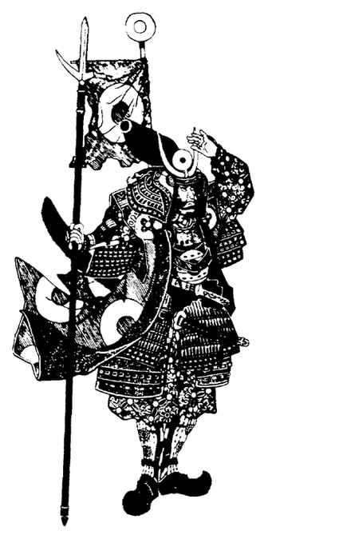

护甲说明
小圆盾（Buckler）：小圆盾是一面小盾，可轻易绑在靠近拳头的手臂上。即使同一只手持有武器，也能佩戴小圆盾。由于体积小，在护甲计算中视作小型盾牌。卡拉图的草原游牧民族常用小圆盾。
链甲（Chain）：链甲由金属环编织或铆接而成，可轻易裁制成几乎任何形状。在卡拉图有多种用途。草原游牧民族有时穿链甲头盔和背心；链甲也用于制作 kote。忍者和贵族都使用整套链甲，穿在衣服下面很难被察觉。
胴丸（Do-maru）：胴丸是覆盖角色腹部、胸部、肩部和背部的胸甲。小型护裙从腰部垂至大腿上部，可与腿甲重叠。胴丸的制作可极为朴素，也可十分华丽，通常由层叠（系扎）甲制成。
腿甲（Haidate）：腿甲是系扎甲制成的围裙，保护角色的大腿和膝部。它由大型甲片组成，松垂在身体前方与两侧，系在腰间。胴丸或腹当下缘较小的甲片会稍微覆盖腿甲。
半头盔（Hanburi）：这是一种结构简单的头盔，通常由硬化皮革或轻质金属片制成，紧贴头部。有些只覆盖头顶和前额；另一些覆盖整个头部并保护耳朵。设计目标是小巧、轻便、可折叠。它们制作便宜、不加装饰，普通士兵常戴。
腹当（Hara-ate）：这是一套用于保护身体正面的护甲，包含系扎甲制成的胸甲和护腿。背面敞开，从后方受到攻击时按 AC 10 处理。
皮胸甲（Hara-ate-gawa）：这是一件简单的皮革胸甲，保护腹部、胸部和背部。制作便宜，普通步兵通常穿着它。
腹卷（Haramaki）：腹卷又称护腹甲，是一件轻型护甲，由丝绸与链甲或小金属片制成。它不笨重，可轻易穿在衣服下面，保护角色的腹部、胸部和背部。
腹卷胴（Haramaki-do）：这件护甲的构造与设计类似腹卷，但不能藏在衣服下面。
兽皮甲（Hide）：兽皮甲不同于普通皮甲，它由厚皮生物的皮制成，最常见的是大象皮和犀牛皮，因此比普通皮革防护更好。
母衣（Horo）：这是一种奇特但简单的防护，有时由骑乘战士穿戴。它由几条长布条缝在一起，一端系在颈部，另一端系在腰附近。骑乘时，布料充满风，鼓胀在骑手身后。如此使用时，只有骑乘中的穿戴者能获得防护。也可在母衣下穿戴藤编骨架，使其在任何时候都能发挥作用。母衣只对射向角色背部的投射武器提供 AC 1 的改善，不提供其他防护。母衣通常色彩鲜艳，并饰有主人的家徽，有助于辨认骑手所属家族，也让所有人知道他并非普通士兵。
大头盔（Kabuto）：这是常与 o-yoroi 搭配的大型头盔。盔体由铆接在一起的铁条制成，头顶通常留有一处小开口，位于甲片交会处。头盔后侧和两侧装有飘垂的护颈甲，通常在前方弯出一对翼状结构。盔体前部通常装有华丽盔饰，常见形状包括角、鹿角、跃鱼和半月。整顶头盔以红丝绳固定。
大头盔是战场上最显眼的护甲部件之一，常装饰得十分奇特华丽。特殊造型包括恶魔面孔、海贝、握着雷电的拳头、高锥、鱼或野兽；有些覆以人发或毛皮。盔体常以银、铜和金装饰，护颈甲外侧系着鲜艳绳带，内侧覆盖染色或彩绘皮革。大头盔为穿戴者的头部提供 AC 3。
铠袖（Kote）：铠袖是一对护甲袖，通过肩部的皮带或布带连接。袖子从肩部延伸至手背，通常由链甲制成，有些还缝入小金属片。样式从朴素到高度装饰皆有。铠袖可不显眼地穿在长袍下，也可与其他护甲部件搭配。
阵笠（Jingasa）：阵笠是农民圆草帽的铁制版本，普通士兵会戴。它没有保护耳朵、脸颊或颈后的护片。不过它很受欢迎，因为行军时也能当作炊锅。
大铠（O-yoroi）：大铠是一整套完整的系扎甲，包括 kote、do-maru、sode、haidate、kabuto 和 sune-ate。此外还有许多较小部件，包括 mempo（面具）、nodawa（护颈）、wakibiki（腋下护甲）、sendan-no-ita 和 hato-wo-no-ita（腋前护甲）。大铠作为配套套装制作，颜色与图案彼此协调，这也使护甲更合身，AC 优于互不配套的单件组合。大铠昂贵且装饰华丽，常用于仪式场合或重大战役，日常很少穿着。
袖甲（Sode）：这种护甲覆盖穿戴者的肩部，呈方形或矩形，通常约一英尺见方。它以绳带固定在其他护甲部件上，尤其是胸甲。因此，sode 不能脱离 do-maru、hara-ate、haramaki 或 haramaki-do 单独穿戴。战斗中有时会在 sode 上系一块布（sode jiruchi），布上染绘或印有识别穿戴者的徽记。
鳞甲（Scale）：常见鳞甲有两种：皮鳞甲和金属鳞甲。普通士兵和骑手穿皮鳞甲，由厚硬化皮片缝在布料或另一块皮革上制成，每片都与周围甲片重叠。金属鳞甲以相同方式制成，但少得多，通常由富裕或地位更高的战士穿着。
盾牌（Shields）：是否常用盾牌取决于卡拉图的地区。有些地方从不使用盾牌！不过，几乎所有盾牌都比其他地区使用的盾牌更轻便。常见材料包括编织竹与柳条、拉伸并硬化的皮革，以及厚层椰纤维或麻。带金属包边的木盾极为罕见。
胫当（Sune-ate）：胫当是一种护胫，从脚踝上方延伸至膝盖下方。它通常由金属条片固定在皮革衬垫上制成，缠绕胫部并系紧。它可以防护针对小腿、足以使人致残的打击。
穿戴多件护甲时，移动率降低一个类别，但绝不会低于大铠的移动率。
